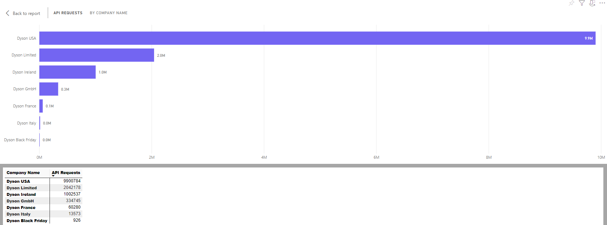
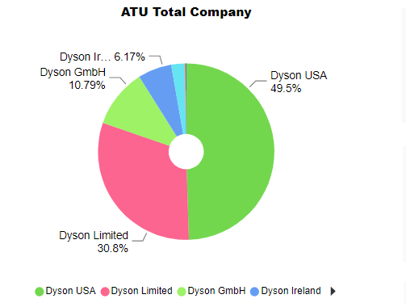
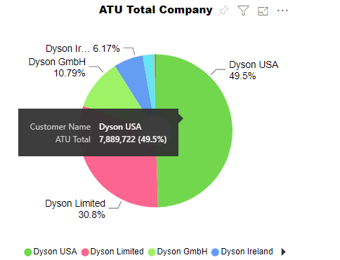
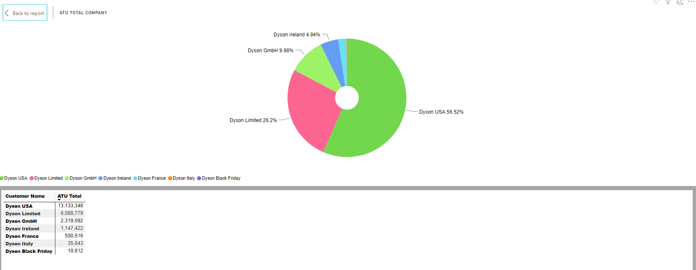
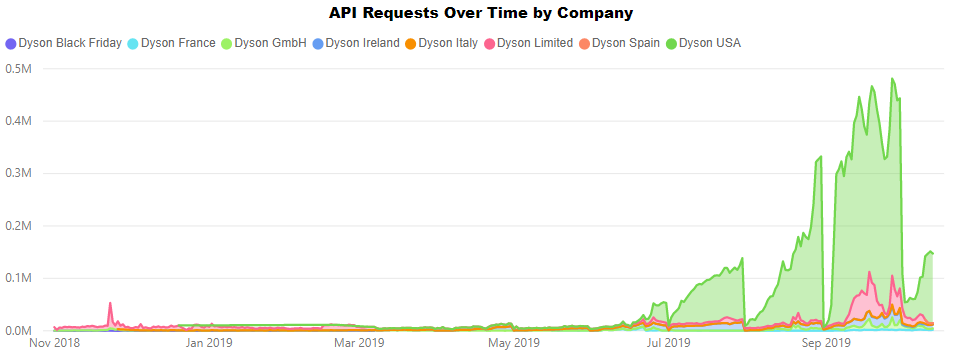
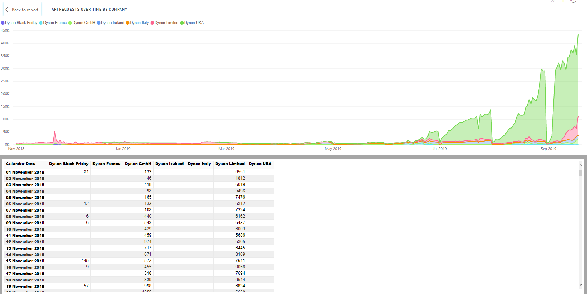

API Overview
The API Overview enables you to get an overview of your organisation's API calls, including call volumes and ATUs used.
It comprises an API data table, an API Requests by Company Name bar chart, an ATU Total Company pie chart, and an API Requests by IntervalDate and CustomerName line graph.

Report Filters
The API Overview report offers the following report-wide filters:
- Date - enables you to select only those calls that were made within a given date range.
- Company Name - where applicable, enables you to select only those calls that were made by a particular company within your group. You can select multiple companies if required.

API Requests by Company Name
The API Requests by Company Name chart shows how many requests each of your companies has made.

Visual Filters
You can filter the companies displayed on the API Requests by Company Name visual as follows:
- API Requests (Numerical) - enables you to filter by number of API requests made. For example, if you were to filter on is greater than 5000000, then only those companies who had made more than 5,000,000 API requests would be displayed.
- Company Name (Basic and Advanced) - enables you to select one or more companies to view.
More Options
The following options are available from the More Options menu:
- Open Comments
- Export Data
- Show Data
- Spotlight
- Sort Descending
- Sort Ascending
- Sort by CustomerName / API Requests
You can also view the records that the visual's data was generated from by right-clicking on it and selecting View Records from the pop-up menu.
Viewing Data
The API Requests by Company Name chart's Show Data option displays the number of API requests that each of your businesses has made.
ATU Total Company
The ATU Total Company chart shows the proportion of your total ATU consumption that each of your companies has incurred.
Hover your mouse pointer over the chart to view the ATUs used by each individual company.
Visual Filters
You can filter the companies displayed on the ATU Total Company visual as follows:
- ATU Total (Numerical) - enables you to filter by number of ATUs consumed. For example, if you were to filter on is greater than 5000000, then only those companies who had consumed more than 5,000,000 ATUs would be displayed.
- Customer Name (Basic and Advanced) - enables you to select one or more companies to view.
More Options
The following options are available from the More Options menu:
- Open Comments
- Export Data
- Show Data
- Spotlight
- Sort Descending
- Sort Ascending
- Sort by CustomerName / ATU Total
You can also view the records that the visual's data was generated from by right-clicking on it and selecting View Records from the pop-up menu.
Viewing Data
The ATU Total Company chart's Show Data option displays the ATUs consumed by each of your businesses.
API Requests Over Time by Company
The API Requests Over Time by Company chart shows how the total number of API requests made by each of your companies has changed over time. Each line represents one of your companies.
Hover your mouse over the chart to view the total number of API requests made by each company for a given IntervalDate.

Visual Filters
- API Requests (Numerical) - enables you to filter by number of API requests made on a given day. For example, if you were to filter on is greater than 100000, then any data points in which the company had made 100000 or fewer API requests on that day would be ignored. In this example, the y-axis of the graph is effectively skewed so that it starts at 100000 rather than 0.
- Company Name (Basic and Advanced - enables you to select one or more companies to view.
- Calendar Date (Basic, Advanced, and Relative Date) - enables you to select specific dates or date ranges to view.
More Options
The following options are available from the More Options menu:
Viewing Data
The API Requests Over Time by Company chart's Show Data option displays the API requests made by each of your businesses, broken down by date.